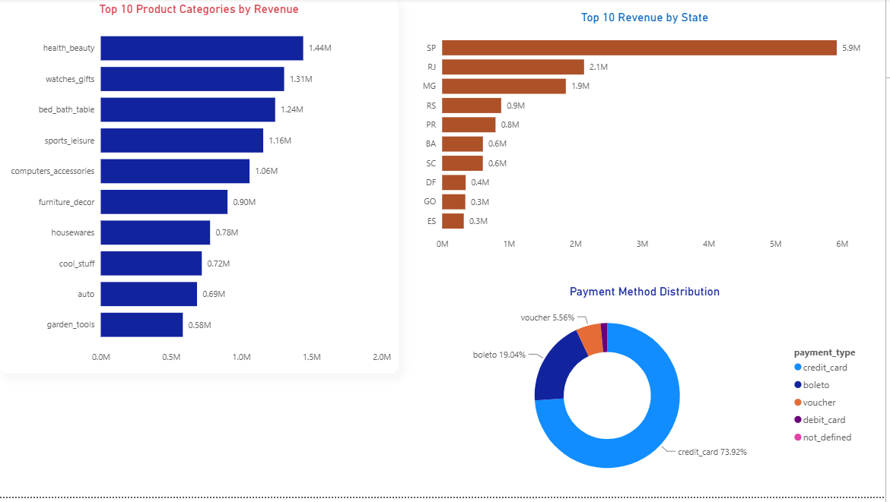

Kenya Healthcare Inequality Analysis
The Kenya Healthcare Inequality Analysis is a research project that investigates disparities in healthcare access and utilization across Kenya using the Kenya Demographic and Health Survey (KDHS) dataset. The study examines how socioeconomic and demographic factors—including wealth, education, place of residence, and region—influence healthcare outcomes and access to essential health services. The project applies statistical analysis, exploratory data analysis (EDA), data visualization, and predictive modeling to identify patterns of inequality and generate evidence that can inform public health policy and decision-making.

Brazilian-Ecommerce-BI-Dashboard
This project presents an end-to-end Business Intelligence solution developed using the Brazilian E-Commerce Public Dataset by Olist. The primary objective was to transform raw transactional data into actionable business insights that support strategic decision-making. The project followed the complete Business Intelligence lifecycle, beginning with understanding the business problem and exploring the data through exploratory data analysis (EDA) then data cleaning, data modeling, dashboard in Power BI, and concluded with evidence-based business recommendations. Throughout the project, emphasis was placed on analytical thinking, evidence-based validation, and designing visualizations that answer meaningful business questions.